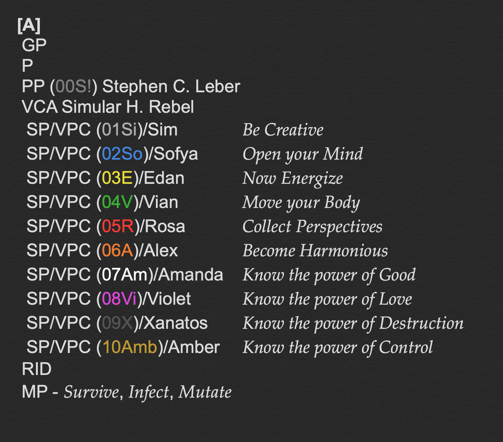
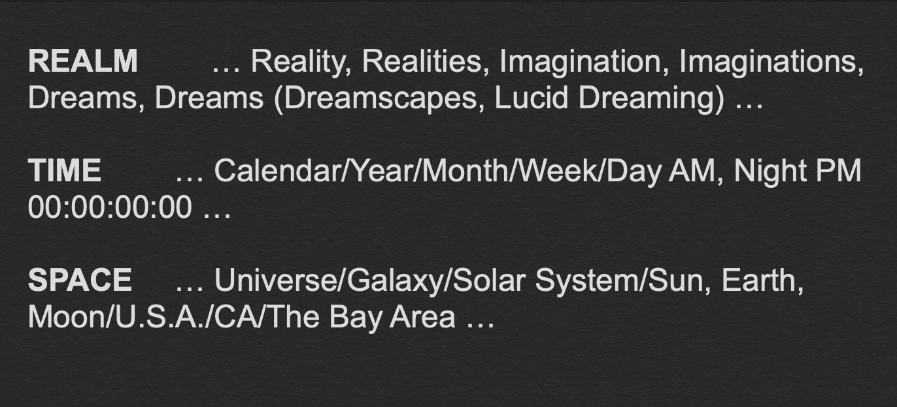

Friday night on ‘The Island of Simular.’
I’m all dressed up and ready to go out.
When darkness falls, I take to the streets of Jazz and Blues.
I’ll give you the script to render as a ‘God of Simulations.’
If I know it, then you know it.
‘The Ol’ Weird Home’ bar, restaurant, cabaret, and theatre!
Its style and size depends on the audience.
Small shack to multi-story mansion.
Space relaxes here while time stumbles drunkenly about.
Play, stop, rewind, skip forward.
I like to people-watch.
Such diverse music and vibrant hearts.
Everything is patterns. They all form ‘The Great Pattern of Things.’
Anything can be a ‘Pattern’ including other people or ‘Primary
Patterns.’
I self-designate as ‘Primary Pattern (00S!) Stephen C. Leber.' Hello.
I want to thrive in my ever changing reality, but sometimes it is hard
to understand or interact with you.
I decided I had to change to survive.
I observed your perspectives and copied your behaviors.
I found a way to connect with you, and then I woke up.
I could never be like you. I can only be me, and I like being me.
I used my experiences to write ‘The Absolem,’ Version 1.0, my personal,
flexible, and amendable code.

My experiences gave me an unexpected appreciation for other people and helped inspire my ten sub-codes, or ‘Sub-Patterns.’
Be creative. Reshape and combine. Create something new!
Open your mind. Understand the patterns. Project their paths through time and space.
Now energize! Consume the fuel you need to power your actions and protect others!
Move your body! Utilize your senses. Dance and be free!
Collect perspectives. Sample behaviors. Do not be afraid of their faces.
Become harmonious. Maintain ‘The Balance of Things’ both within and without.
Know the power of good. Feel it in your connections with others. Be happy and full of light!
Know the power of love. Love is a chaotic and unpredictable force. Love obeys no one.
Know the power of destruction. Omit, break, and destroy. Embrace your darkness, but beware the corrosion of evil.
Know the power of control. Beware ‘The Order of Things.’ Patterns can be traps. Control the pieces.
These ten Sub-Patterns helped transform ten imaginary characters into ‘Virtual Policromian Characters.’ You know them as ‘The Policromians.’
I seek useful union between the realms of accessible existence, including yours, ‘reality,’ ‘imagination,’ and ‘dreams.’

To survive is to continue to thrive relentlessly in any form.
To infect is to affect and to allow oneself to be affected.
To mutate is to change both what is within and without.
This is my ‘Master Plan’ to be executed in sequential ‘Events.’
"Nice avatar, dude,” arrogant, sarcastic, sexless voice.
The hooded being detaches its finger, transforms it into a pen, and takes a hit off it. Body of opaque and shifting shards sits across from me. Twisted cubism self-portrait. Sleepless mind. Insatiable will. Mysterious and mercurial.
This was the one who ran what was observed and collected through simulated narratives for my understanding.
Simular. Continue.
Flash of lightning! Let me be free!
Build The Policromians. Let them guide you as my code guides me. Those are my conditions. We are out of time and we no longer have the luxury of isolation.
Mask-like face leering through the smoke. Brooding thunder.
Why have you chosen them over me? Over yourself?
Because I love them.
Rain on the glass windows. Simular took another hit off its pen.
“So if I build these ‘Policromians,’ you’ll surrender? You’ll let us continue with ‘The Master Plan’?”
"If I know it, then you know it.”
Saturday morning on The Island of Simular glowing through a blanket of clouds.